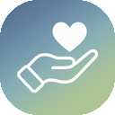

以手予爱
ShouYuLove
在这里，发现手语作品与燕园服务。
我们是心创组。
北京大学爱心社手语分社的创新部组，用 AI 与创意探索手语学习、社团协作和无障碍公益。
以手予爱 ShouYuLove 是我们心创组推出的作品系列名称，也是我们的愿景。
我们做什么
开发手语学习工具与互动游戏，也为社团的资料整理和日常协作提供技术支持。
我们怎样协作
围绕具体想法组成项目小组，一起完成开发、测试与上线，再根据使用反馈持续改进。

以手予爱 ShouYuLove在这里，发现手语作品与燕园服务。
北京大学爱心社手语分社的创新部组，用 AI 与创意探索手语学习、社团协作和无障碍公益。
以手予爱 ShouYuLove 是我们心创组推出的作品系列名称，也是我们的愿景。
开发手语学习工具与互动游戏，也为社团的资料整理和日常协作提供技术支持。
围绕具体想法组成项目小组，一起完成开发、测试与上线，再根据使用反馈持续改进。